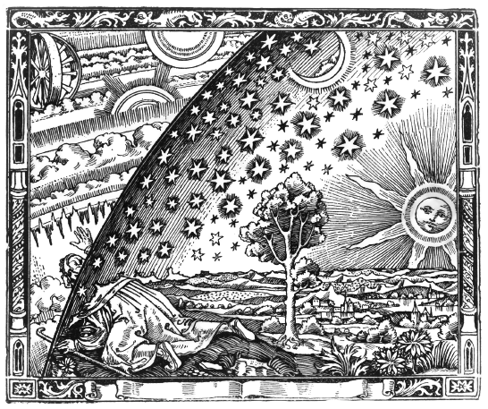

I am a phD student at the Dublin Institute for Advanced studies, under the supervision of Yasaman Yazdi.
Before that, I completed Part III in DAMTP at the University of Cambridge, taking courses on theoretical physics.
Before that, I was an undergrad at Imperial College London.
I am interested in fundamental physics, particularly on the quantum field theory side of things. At Cambridge, I wrote my Part III Essay for David Tong.
At Imperial, I carried out my final project under the supervision of Yasaman Yazdi. I have also been doing some work outside of my formal education with Job Feldbrugge,
who is at the University of Edinburgh.
Feel free to contact me at: [first initial][last name][at]stp.dias.ie